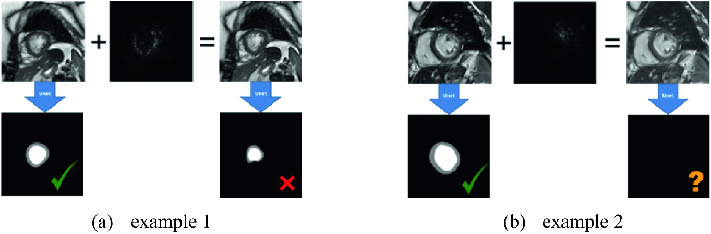
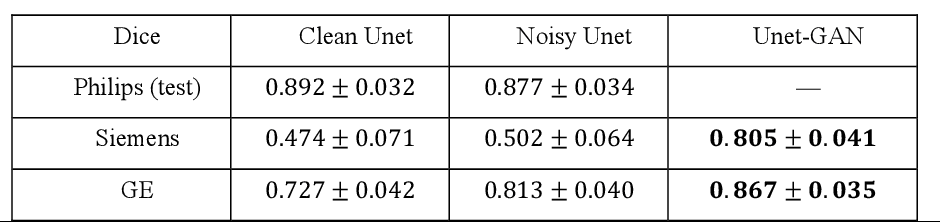
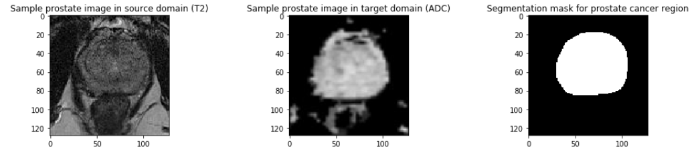
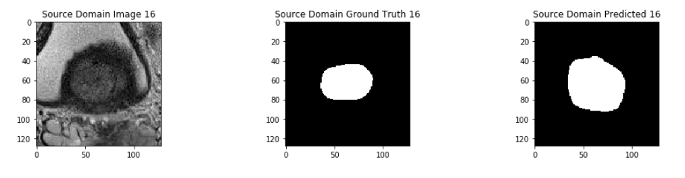
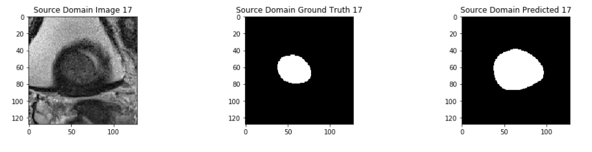
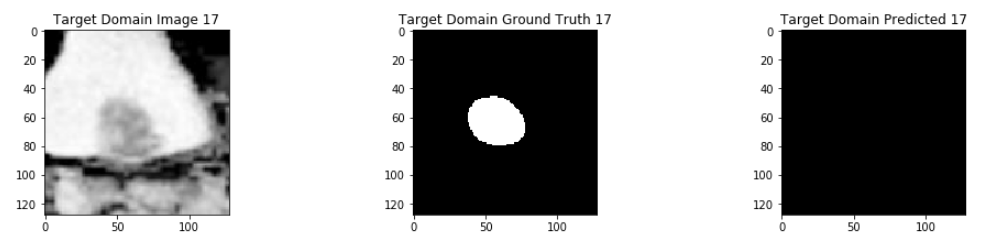

Bio Imaging Segmentation
using UNet and GAN
Cody Crofford, Sonal Jha, Saikat Dey
CS5824/ECE5424
Unet, is a powerful method for medical image segmentation. To date Unet has
demonstrated state-of-art performance in many complex medical image
segmentation tasks, especially under the condition when the training and testing
data share the same distribution (i.e. come from the same source domain).
However, in clinical practice, medical images are acquired from different
domains/vendors and centers. The performance of a U-Net trained from a particular source
domain, when transferred to a different target domain (e.g. different vendor,
acquisition parameter), can drop unexpectedly. Collecting a large amount of
annotation from each new domain to retrain the U-Net is expensive, tedious, and
practically impossible.The paper proposes a Unet-CycleGan architecture to solve this domain shift problem.1
UNet Architecture1

The domain shift problem of UNet1

Two examples to show that the trained Unet are vulnerable to the carefully calculated
perturbation added to the original image. The perturbation hardly affects human vision, but leads
to failure of the Unet: in the first example, the segmentation went wrong; in the second example,
the segmentation completely failed.
UNet-GAN Architecture1

Summarization of Paper Results1

In the paper, the performance of Left Ventricle segmentation is evaluated in terms
of Dice overlap index between the ground truth and the segmentation results. Three scenarios are compared:
Clean Unet(train/test data from same domain), Noisy Unet(train/test data from different domains) and Unet-GAN.
Pathwork
Our project aims to conduct the following experiments
(1) Address the domain shift problem in Unets by analyzing and comparing the performance of Unets over different domains/vendors
(2) Design an unpaired generative adversarial network (GAN) for vendor-
adaptation, and then perform segmentation. We have used Prostate central gland and peripheral zone images as our dataset in our experiments where two different modalities( T2, ADC) served as different domains, the methodology can be
extended to medical images segmentation in general.
2.1 Data
The experiments involved, Prostate central gland and peripheral zone images dataset.
Since the dataset is multimodal, the two different MR modalities namely T2 and ADC were used as training/source and testing/target domains respectively.
Our dataset can be summarized as follows:
Size: 48 4D volumes (32 Training + 16 Testing)
Source: Radboud University, Nijmegen Medical Centre

NOTE:
The datset used in the original paper(i.e the paper we are replicating
1),
SCMR Consensus Contour Data was different and had medical data privacy issues. Due to lack of authorization necessary to handle such kind of data we decided to go with this one.
2.2 Methods
2.2.1 Unet
Our architecture has 4 downblocks, 4 upblocks and a bottleneck.
Each downblock consists of 2 convolution layers with stride 1 and RELU activation, followed by Maxpool.
Similarly, the Upblock consists of upsampling followed by 2 convolution layers.
The bottleneck has 2 convolution layers.
We trained the model using Binary Cross Entropy as our Loss Function. We used adaptive moment estimation (Adam) optimization with learning
rate of 0.001. Our source and target domains are T2 and ADC respectively. The number of epoches are 20 and we evaluate our results in terms of 2 metrics, namely f1 and Dice Coefficient.
2.2.2 GAN
We tried to run the cyclic GAN model according to the implementation with source domain as T2 and target domain ADC. But we faced hardware constraints, as in using our own hardware the estimated training time was 26 days.
2.2.3 Experiments
We performed comparative experiments to evaluate the performance of:
1) Unet trained on the source domain(T2) domain and tested on source domain
2) Unet trained on the source domain(T2) domain and tested on target domain(ADC)
2.3 Tools
Software Tools & Libraries:
Hardware:
- GPU:GeForce GTX 1050
- Memory:2GB
- Clock Rate:1.493 GHz
3.1 Results
3.1.1 Resulting Images
Following are some result images depicting the clear segmentation evaluations and comparisions between the 2 scenarios.




3.1.2 Loss and Evaluation Metrics
3.1.3 Summarization
| Scenarios |
Dice Index |
F1 Metric |
| Source Domain Train/Test |
0.8429 |
0.9739 |
| Source Domain Train/Target Domain Test |
0.8105 |
0.9718 |
3.2 Observations
We can summarize our observations as follows:
We saw a drop in the performance when tested on target domain comapred to a source domain, but did not see a significant fall as mentioned in the originia paper
We found that f1 score is better metric comapred to Dice Coefficient in our case. One possible reason could be that our data is skewed.
To classify the segmented area the threshold value most commonly used is 0.5 but in our case 0.4 gave the best results
The validation loss started to increase beyond 50 epoches. One possible reasons could be the lack of training data